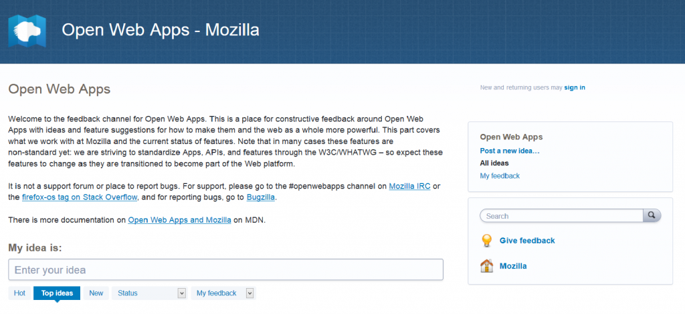

2014 年 8 月，我們在 UserVoice 上新啟用了 Web App 意見反饋頻道，且誘發了許多不錯的討論主題，以下列出其中幾個要點：
- 本討論顯現初期FileSystem API 的重要性。
- 對背景服務的建議則強化如BackgroundSync API 提案的需要。此概念則針對 Firefox OS 建構出些許不同，但名稱近似的「requestSync API」暫時為權宜之計，等到 Firefox OS建構出完整的Service Worker 為止。
- 討論磁碟儲存容量的集中管理，確保類似初期quota API 的東西仍會是 Mozilla Gecko 開發者的優先處理要務。
- 要求新版本的 localStorage，期能成為主要的儲存機制，以取代目前太多不同的選擇。

對參與討論且提供實際建議的許多人，我們鄭重表達感謝之意。可惜的是，剛開始的參與程度雖然不錯，但後續活動就逐漸降低。我們認為現在該是停用openwebapps.uservoice.com 的時候了。透過 UserVoice 的大量資料匯出服務，我們已經妥善儲存了之前發生的討論與意見。
我們仍須各方工程師拋磚引玉，請繼續反應意見並建議應有的功能給我們。往後會直接將反應意見導回郵件＼消息群組 (可參閱IRC 頻道與郵件群組的清單，找到 Mozilla 專屬的 App 頻道)；另有specifiction.org/ 是建構 Web 標準的專屬討論區；當然還有Bugzilla。
備註：在 UserVoice 上 Firefox 開發者工具意見反應頻道 (devtools.uservoice.com) 仍繼續使用中，同時將會繼續開放！